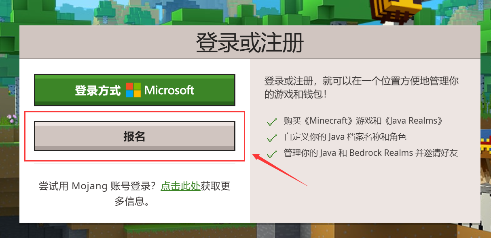

正版购买与登录（WIP）
零、序
国内因为一些原因，是无法直接在Minecraft官网上进行购买的，因此这里就不说明在官网购买的方法。
国内目前最主要购买Minecraft的方式，都是通过使用 微软账户，在 Xbox 上进行获取。而这个 微软账户 就是和你的 Minecraft用户档案 绑定在一起的。
换言之，你购买正版之后，就是用你的微软账户去登录游戏。
现在购买的正版Minecraft是包括 Java版 和 基岩版 的。基岩版的玩家档案设置是在游戏本体里面的。而Java版的玩家档案设置，包括皮肤、披风、玩家名更改等操作，都是在Minecraft官网上的个人页面进行的。
一、注册微软账户
可以去微软官网注册，也可以直接在Minecraft官网注册，这里就以在Minecraft官网注册为例。
进入Minecraft官网（https://www.minecraft.net/），开始会弹出一个 提示前往下载中国版的提示 的页面，点击下方 继续浏览该网站 即可关闭。
之后点击左上角的 账户，点击 登录。

若有弹出这个窗口，点击 “Stay on Minecraft.net” 这行绿字即可关闭该窗口。
接下来就根据网站的引导来注册你的微软账号。其中部分验证环节可能加载不出来，



二、购买正版
你可以在 微软应用商店（Microsoft Store）或是 Xbox 里购买，两者的支付方式都是支付宝。
在Windows菜单栏里找到或搜索对应名字，找到并打开对应应用程序。
三、正版登录
大部分的启动器